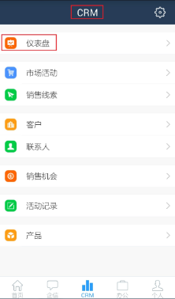
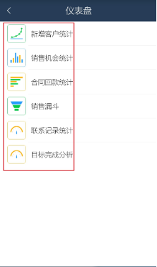
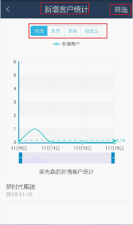
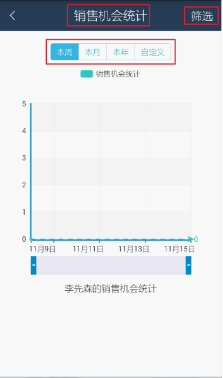
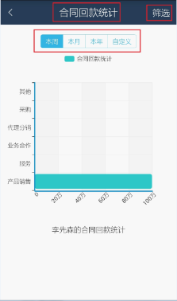
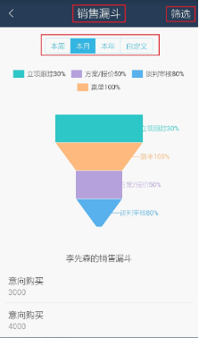
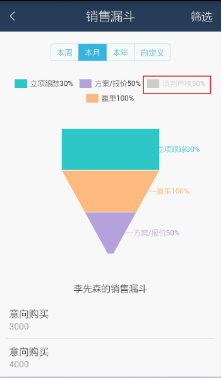
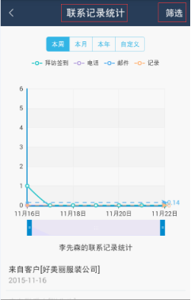
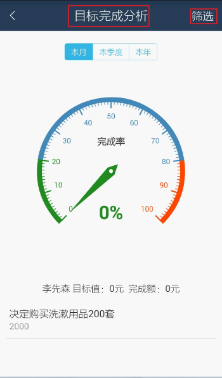

如何查看仪表盘？
-
-
进入“CRM-仪表盘”，可看到新增客户统计、销售机会统计、合同回款统计、销售漏斗、活动记录统计、目标完成分析等六类统计。以下所有统计结果都是本人有权限看到的数据。


-
进入“CRM-仪表盘-新增客户统计”，默认显示当前登录用户本周的新增客户统计；用户根据周期进行自定义查询。点击界面右上角的筛选按钮，可以查询其他人员还可以按照部门进行查询。

-
进入“CRM-仪表盘-销售机会统计”，默认的是当前登录用户本周的销售机会统计。用户根据周期进行自定义查询。点击界面右上角的筛选按钮，可以查询其他人员还可以按照部门进行查询。

-
进入“CRM-仪表盘-合同回款统计”，默认的是当前登录用户本周销售合同在当前时间的回款统计。用户根据周期进行自定义查询。点击界面右上角的筛选按钮，可以查询其他人员还可以按照部门进行查询。

-
进入“CRM-仪表盘-销售漏斗”，默认的是当前登录用户本周的销售机会的一个分部情况。用户根据周期进行自定义查询。点击界面右上角的筛选按钮，可以查询其他人员还可以按照部门进行查询。

-
当用户不想统计某个阶段的销售机会，比如在漏斗中不想统计谈判审核的销售机会，可以点击漏斗上方的“谈判审核80%”，该按钮就会变成灰色的，然后销售漏斗就不会出现谈判审核阶段的统计。如果想再次看到该项统计，点击“谈判审核80%”变成亮色即可。

-
进入“CRM-仪表盘-联系记录统计”，默认的是当前登录用户本周的联系记录统计。用户根据周期进行自定义查询。点击界面右上角的筛选按钮，可以查询其他人员还可以按照部门进行查询。

-
进入“CRM-仪表盘-目标完成分析”，默认显示的是当前登录用户本周目标的完成率。其中目标值是在网页端“销售目标”节点中设置的，完成额是查询期间内赢单的销售机会的金额之和。用户根据周期进行自定义查询。点击界面右上角的筛选按钮，可以查询其他人员还可以按照部门进行查询。
